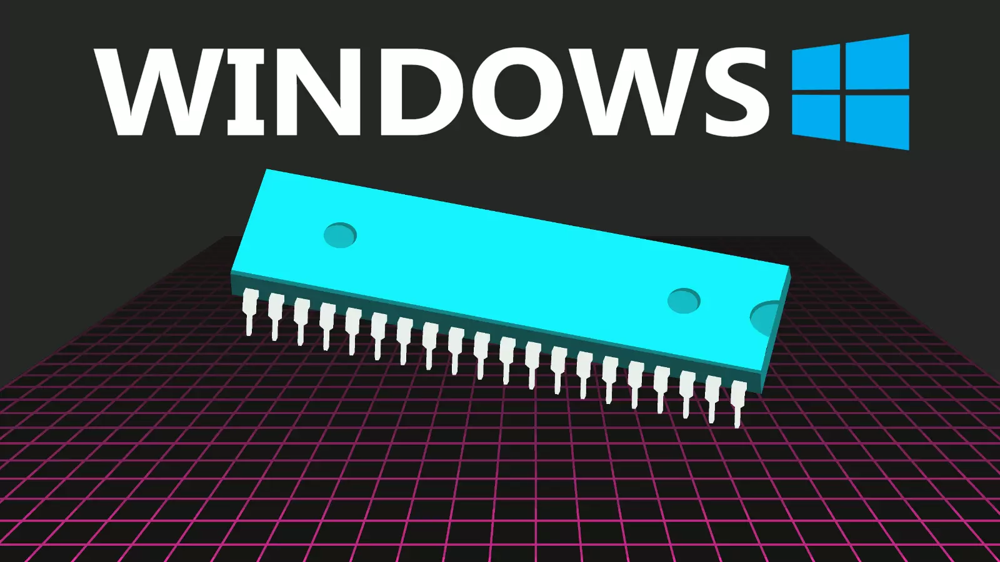

Windows系统CMD
摘要：本文记录了Windows系统CMD的使用经验，持续汇总中。

快捷键
win+r -> 输入cmd：打开命令行窗口
Enter：复制
鼠标右键：粘贴
ctrl+c：终止当前窗口正在运行的程序
命令
所有命令可以后面接/?或者-help查看使用帮助
cls：清空窗口内容
ipconfig：查看IP 地址、子网掩码和默认网关等信息
ping：测试网络是否畅通，常用
ping ip测试能否与地址为ip的主机建立连接netstat：查看网络连接、状态以及对应的进程id，常用
netstat -ano | findstr "端口号"查看端口号是否被占用以及占用端口的进程PIDtasklist：查询当前运行的进程列表，常用
tasklist | findstr "PID"查询PID对应进程的详情taskkill：按照进程 ID (PID) 或映像名称终止任务，常用
taskkill /f /t /im xxx.exe强制终止指定进程